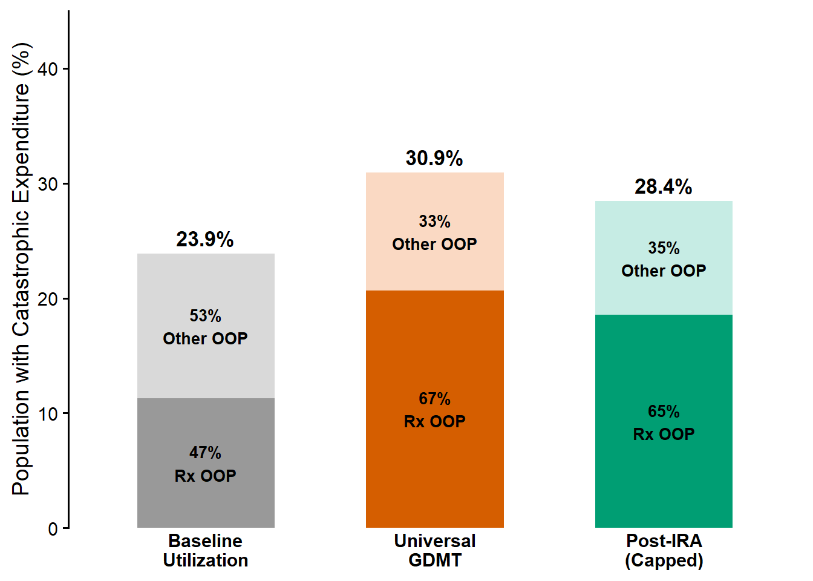
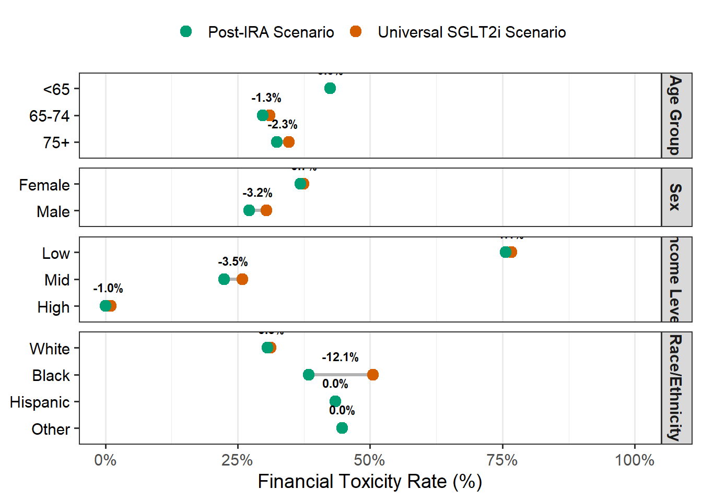
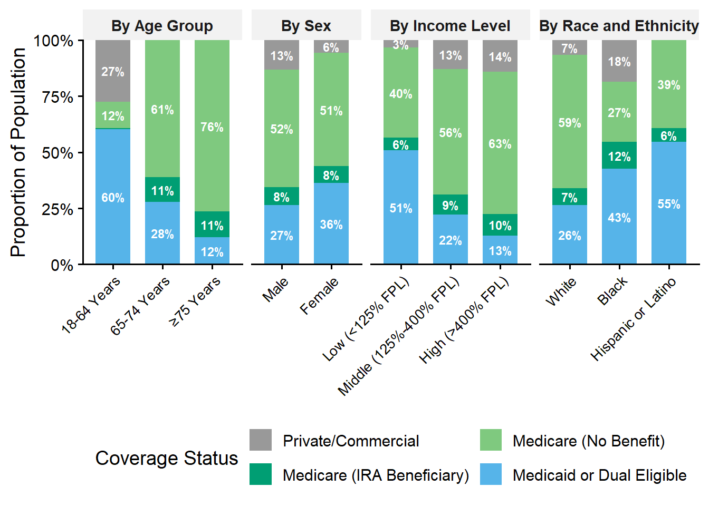

— CONSORT FLOW DIAGRAM DATA (Person-Years) —
STEP 1: Total MEPS Population (2021-2023) | N = 69,686
Exclusion 1: No HF Diagnosis | n = 69,141
STEP 2: Heart Failure Diagnosis (CCSR: CIR019) | N = 545 (0.8%)
Exclusion 2: Pediatric < 18 | n = 0 (0.0%)
STEP 3: Adult Population (Age >= 18) | N = 545 (100.0%)
Exclusion 3: No Target GDMT | n = 180 (33.0%)
STEP 4: Current GDMT Use (BB, ARNI, or MRA) | N = 365 (67.0%)
Exclusion 4: Uninsured/Other | n = 11 (3.0%)
STEP 5: Final Analytic Cohort (Valid Insurance) | N = 354 (97.0%)
| Table 1. Weighted Baseline Demographic and Clinical Characteristics of the U.S. HFrEF Population (2021–2023). |
| Age Category |
|
|
|
|
| <65 |
406,296 (34%) |
143,405 (100%) |
192,984 (57%) |
69,907 (9.7%) |
| 65-74 |
302,812 (25%) |
0 (0%) |
84,482 (25%) |
218,330 (30%) |
| 75+ |
492,010 (41%) |
0 (0%) |
59,265 (18%) |
432,745 (60%) |
| Sex |
|
|
|
|
| Male |
588,670 (49%) |
86,839 (61%) |
141,291 (42%) |
360,540 (50%) |
| Female |
612,448 (51%) |
56,566 (39%) |
195,440 (58%) |
360,442 (50%) |
| Race/Ethnicity |
|
|
|
|
| White |
867,830 (72%) |
78,642 (55%) |
188,488 (56%) |
600,700 (83%) |
| Asian/Other |
72,781 (6.1%) |
15,248 (11%) |
41,532 (12%) |
16,001 (2.2%) |
| Black |
201,879 (17%) |
49,516 (35%) |
74,295 (22%) |
78,068 (11%) |
| Hispanic |
58,629 (4.9%) |
0 (0%) |
32,417 (9.6%) |
26,212 (3.6%) |
| Income Tier |
|
|
|
|
| Low |
487,443 (41%) |
24,360 (17%) |
210,054 (62%) |
253,030 (35%) |
| Mid |
356,690 (30%) |
60,706 (42%) |
78,218 (23%) |
217,766 (30%) |
| High |
356,985 (30%) |
58,340 (41%) |
48,459 (14%) |
250,185 (35%) |
| Current GDMT Intensity |
|
|
|
|
| Comprehensive (≥3 drugs) |
323,374 (27%) |
48,286 (34%) |
99,011 (29%) |
176,077 (24%) |
| Suboptimal (≤2 drugs) |
877,744 (73%) |
95,119 (66%) |
237,720 (71%) |
544,904 (76%) |
| Beta-Blocker Use |
1,079,779 (90%) |
136,762 (95%) |
299,272 (89%) |
643,745 (89%) |
| MRA Use |
355,642 (30%) |
38,100 (27%) |
110,810 (33%) |
206,732 (29%) |
| ARNI Use |
233,591 (19%) |
35,946 (25%) |
70,401 (21%) |
127,244 (18%) |
| SGLT2i Use |
211,860 (18%) |
32,709 (23%) |
56,734 (17%) |
122,418 (17%) |
| Total Prescription OOP ($) |
225 (76, 694) |
208 (108, 427) |
40 (9, 112) |
415 (192, 1,134) |
| Total Medical OOP ($) |
920 (247, 2,789) |
1,088 (661, 4,965) |
134 (54, 643) |
1,435 (535, 3,494) |
| Notes: Data derived from the Medical Expenditure Panel Survey (MEPS), pooled 2021–2023. Values represent weighted national estimates. Abbreviations: ARNI, Angiotensin receptor-neprilysin inhibitor; GDMT, Guideline-directed medical therapy; HFrEF, Heart failure with reduced ejection fraction; MRA, Mineralocorticoid receptor antagonist; OOP, Out-of-pocket costs; SGLT2i, Sodium-glucose cotransporter-2 inhibitor. |
| Table 2. Projected Incidence of Financial Toxicity Among Medicare Beneficiaries Under Universal Guideline Adherence vs. The Inflation Reduction Act. |
| Overall Population |
| All Medicare Beneficiaries |
23.9 (16.6-31.2) |
30.9 (21.1-40.7) |
28.4 (18.6-38.3) |
2.5 |
8.0 |
| Age Group |
| <65 |
21.7 (-6.7-50.1) |
38.6 (-8.3-85.4) |
38.6 (-8.3-85.4) |
0.0 |
0.0 |
| 65-74 |
23.1 (8.8-37.4) |
30.6 (15.0-46.3) |
28.9 (13.4-44.4) |
1.8 |
5.7 |
| 75+ |
24.6 (13.7-35.6) |
29.8 (15.8-43.8) |
26.6 (12.5-40.6) |
3.2 |
10.8 |
| Sex |
| Male |
19.5 (8.2-30.8) |
29.7 (13.9-45.5) |
25.3 (8.8-41.7) |
4.5 |
15.0 |
| Female |
28.3 (16.2-40.4) |
32.1 (18.6-45.6) |
31.6 (18.3-44.9) |
0.5 |
1.5 |
| Income Level |
| Low |
54.1 (33.2-75.1) |
68.5 (46.0-90.9) |
67.8 (45.5-90.1) |
0.7 |
1.0 |
| Mid |
13.9 (-2.8-30.7) |
20.5 (2.4-38.5) |
13.1 (1.0-25.2) |
7.4 |
36.1 |
| High |
2.0 (-1.6-5.6) |
2.0 (-1.6-5.6) |
2.0 (-1.6-5.6) |
0.0 |
0.0 |
| Race/Ethnicity |
| White |
20.4 (12.2-28.6) |
28.7 (17.1-40.2) |
27.8 (16.3-39.2) |
0.9 |
3.2 |
| Asian/Other |
49.5 (7.6-91.5) |
49.5 (7.6-91.5) |
49.5 (7.6-91.5) |
0.0 |
0.0 |
| Black |
46.3 (20.4-72.2) |
47.5 (21.1-73.8) |
31.8 (-1.4-65.0) |
15.7 |
33.0 |
| Hispanic |
21.4 (-25.0-67.9) |
21.4 (-25.0-67.9) |
21.4 (-25.0-67.9) |
0.0 |
0.0 |
| Notes: Financial toxicity defined as annual household medical expenditures exceeding 20% of post-subsistence income. ‘Universal GDMT’ models the counterfactual cost if all patients were prescribed quadruple therapy. ‘Post-IRA’ applies the $2,000 annual pharmacy cap to the Medicare Part D portion of these costs. |
| Table 3. Efficiency of the Policy Intervention: Number Needed to Cap (NNC) and Projected Annual Lives Protected. |
| Overall |
| Overall |
14 |
40 |
17,813 |
| Age Group |
| <65 |
6 |
Negl. |
0 |
| 65-74 |
13 |
57 |
3,826 |
| 75+ |
19 |
31 |
13,987 |
| Sex |
| Male |
10 |
22 |
16,076 |
| Female |
26 |
Negl. |
1,737 |
| Income Level |
| Low |
7 |
146 |
1,737 |
| Mid |
15 |
14 |
16,076 |
| High |
Negl. |
Negl. |
0 |
| Race/Ethnicity |
| White |
12 |
108 |
5,563 |
| Asian/Other |
Negl. |
Negl. |
0 |
| Black |
85 |
6 |
12,250 |
| Hispanic |
Negl. |
Negl. |
0 |
| Notes: ‘Number Needed to Harm’ represents the number of patients treated with Universal GDMT to cause one additional case of financial toxicity. ‘Number Needed to Cap’ represents the number of patients who must benefit from the IRA cap to prevent one case of toxicity. ‘Lives Protected’ is the product of the Absolute Risk Reduction and the weighted population size. |
| Figure 1. The Impact of Universal Guideline Adherence and Provisions of the Inflation Reduction Act on Financial Toxicity Among Medicare Beneficiaries. Bars represent the proportion of Medicare beneficiaries facing catastrophic health expenditures (>20% of income). Left: Baseline toxicity under current utilization. Middle: Toxicity under ‘Universal GDMT’ (quadruple therapy), showing a surge in drug costs (Orange). Right: Toxicity after applying the IRA’s $2,000 pharmacy cap (Green), showing a reduction in drug-attributable toxicity. |

| Figure 2. Heterogeneity in Policy Impact: Reductions in Financial Toxicity by Demographic Subgroup Under the Inflation Reduction Act. The dumbbell plot illustrates the prevalence of financial toxicity under Universal GDMT (Orange) versus the Post-IRA Scenario (Green). The length of the grey connector indicates the magnitude of the absolute risk reduction. Note the substantial reductions for Black beneficiaries and Mid-Income patients, contrasting with negligible changes for Hispanic and High-Income groups. |

| Figure 3. The Equity Paradox: Distribution of Insurance Coverage Across Demographic Subgroups Explaining Differential Policy Impact. Bars represent the proportion of patients within each demographic subgroup covered by specific insurance types. Green bars (Medicare IRA Beneficiary) indicate patients who benefit from the cap. Blue bars (Medicaid/Dual) and Grey bars (Uninsured) represent patients unaffected by Part D reform. The high proportion of Medicaid/Uninsured status among Hispanic and Low-Income patients explains the minimal impact of the IRA observed in these groups. |

| Supplementary Table 1. Annualized Median Out-of-Pocket Costs for Guideline-Directed Medical Therapies by Insurance Type (2023 Inflation-Adjusted Dollars). |
| Medicare |
$20 |
$532 |
$12 |
$628 |
$1,193 |
| Medicaid/Dual |
$0 |
$0 |
$0 |
$0 |
$0 |
| Commercial |
$49 |
$91 |
$28 |
$817 |
$986 |
| Supplementary Table 2. Sensitivity Analysis: Projected Financial Toxicity in the Overall U.S. HFrEF Population (Including Commercial and Medicaid). Note: Impact is diluted in this view as ~40% of the population (Commercial/Medicaid) is ineligible for the IRA cap. |
| Overall Population |
| All Patients |
27.1 (20.9-33.4) |
31.3 (24.2-38.5) |
29.9 (22.8-36.9) |
1.5 |
4.7 |
| Age Group |
| <65 |
28.5 (16.3-40.7) |
31.4 (18.1-44.7) |
31.4 (18.1-44.7) |
0.0 |
0.0 |
| 65-74 |
27.0 (13.4-40.6) |
32.4 (17.9-47.0) |
31.2 (16.8-45.5) |
1.3 |
3.9 |
| 75+ |
26.1 (15.0-37.1) |
30.6 (17.3-43.9) |
27.8 (14.4-41.2) |
2.8 |
9.3 |
| Sex |
| Male |
22.1 (12.7-31.5) |
28.4 (17.3-39.5) |
25.7 (14.5-36.8) |
2.7 |
9.6 |
| Female |
31.9 (22.3-41.6) |
34.2 (23.9-44.4) |
33.9 (23.7-44.1) |
0.3 |
0.8 |
| Income Level |
| Low |
58.6 (45.6-71.5) |
66.1 (52.9-79.2) |
65.7 (52.6-78.8) |
0.4 |
0.5 |
| Mid |
9.5 (-1.2-20.2) |
13.5 (1.8-25.2) |
9.0 (1.3-16.6) |
4.5 |
33.4 |
| High |
1.8 (-0.8-4.4) |
1.8 (-0.8-4.4) |
1.8 (-0.8-4.4) |
0.0 |
0.0 |
| Race/Ethnicity |
| White |
23.9 (16.7-31.2) |
29.7 (20.7-38.7) |
29.0 (20.1-37.9) |
0.6 |
2.2 |
| Asian/Other |
36.1 (-3.6-75.8) |
36.1 (-3.6-75.8) |
36.1 (-3.6-75.8) |
0.0 |
0.0 |
| Black |
37.4 (21.5-53.2) |
37.8 (21.9-53.8) |
31.8 (14.4-49.1) |
6.1 |
16.0 |
| Hispanic |
27.6 (2.7-52.6) |
27.6 (2.7-52.6) |
27.6 (2.7-52.6) |
0.0 |
0.0 |
| Insurance Type |
| Commercial |
7.6 (-1.6-16.8) |
7.6 (-1.6-16.8) |
7.6 (-1.6-16.8) |
0.0 |
0.0 |
| Medicaid/Dual |
42.4 (26.4-58.3) |
42.4 (26.4-58.3) |
42.4 (26.4-58.3) |
0.0 |
0.0 |
| Medicare |
23.9 (16.6-31.1) |
30.9 (21.3-40.6) |
28.4 (18.7-38.2) |
2.5 |
8.0 |
| Supplementary Table 3. Projected Annual Out-of-Pocket Savings for Medicare Beneficiaries Stratified by Income Level. |
| Overall |
$3,929 |
$3,503 |
$426 |
23.2 |
$1,840 |
| Low |
$2,882 |
$2,598 |
$284 |
16.3 |
$1,746 |
| Mid |
$3,801 |
$3,289 |
$512 |
29.2 |
$1,756 |
| High |
$5,099 |
$4,604 |
$494 |
24.9 |
$1,986 |
![]()
{kind=link}
{kind=link}
{kind=link}